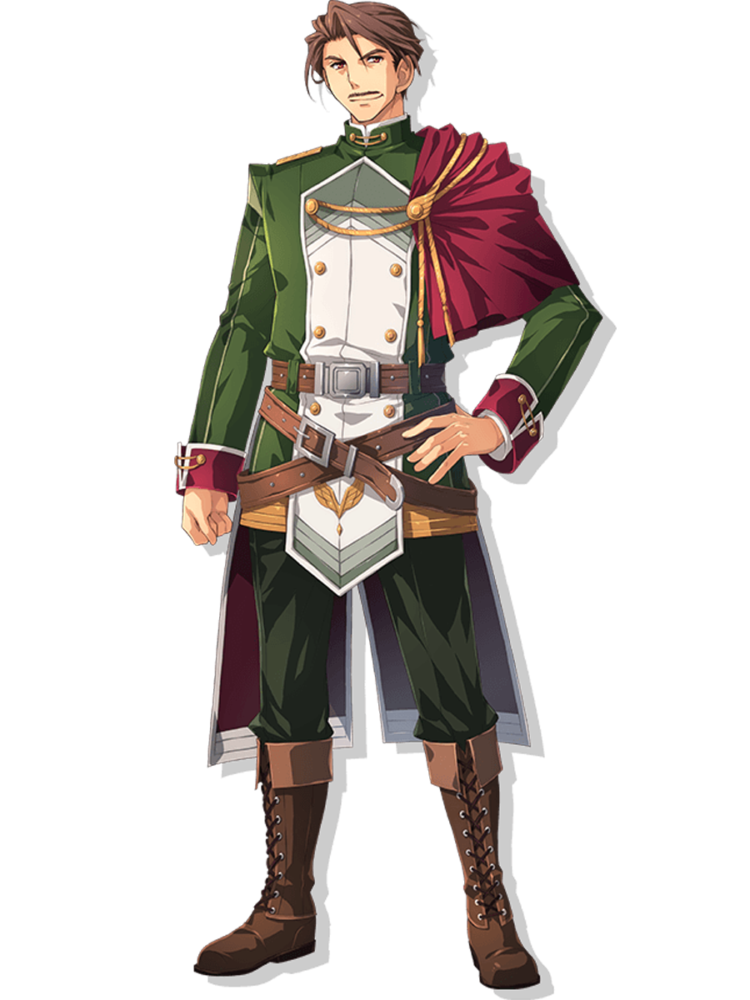
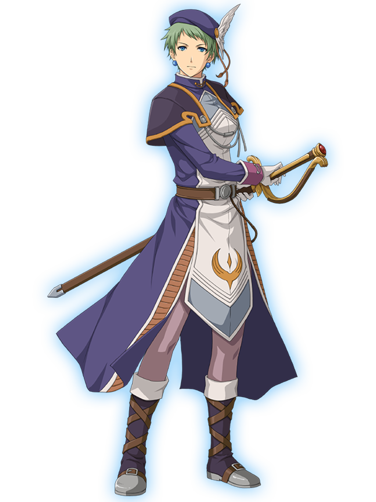
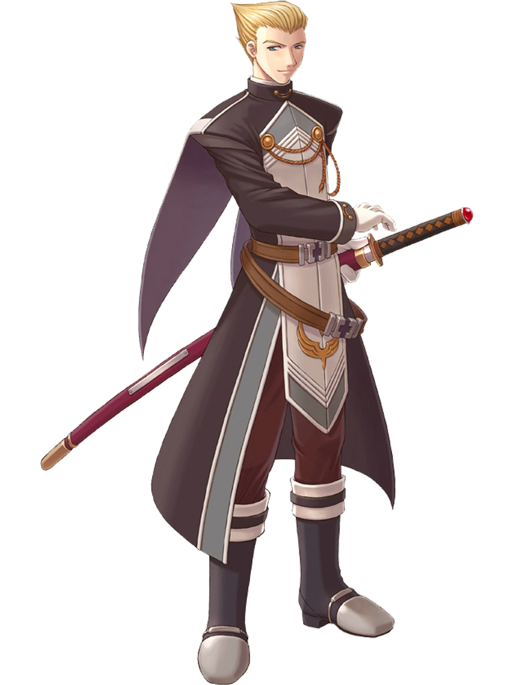
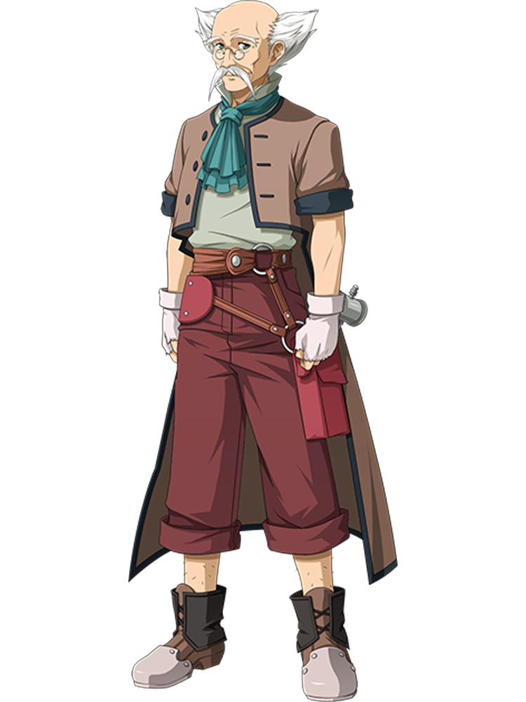

Cassius Bright
Brigadier of Liberl Military
S-Rank Bracer

Julia Schwarz
Liberl Royal Guard Captain
Royal Escort and Tutor
Arseille Captain

Alan Richard
Liberal Royal Army Major
Intelligence Division Head
R&A Research Founder

Tita Russell
Grandpa: Albert Russell
Mechanic Apprentice
